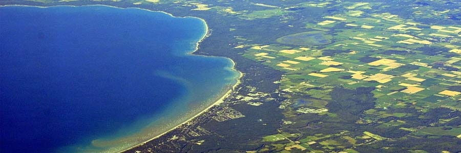
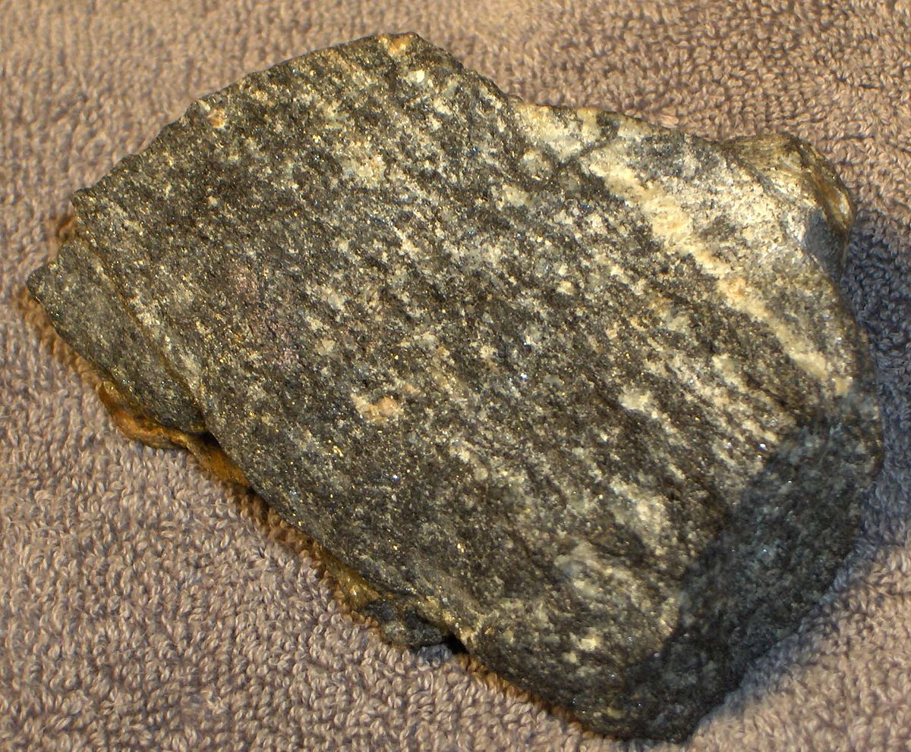

This is a website for Canada
Canada rock. And Deadmau5, you've been reading a copy of Chatelaine, from 1983. I don't know who's telling you that Dudley Do-Right is the brains of the operation, 'cause Michael Cera and Terry Fox are both the brains of the operation. Geez, a tunnel to Niagara Falls! Take off, how convenient! I'm leaving Skookumchuck with Mike Myers. I need a little vacation. Well, we found this Kraft Dinner in a bottle of your beer. Ivan Reitman had some and they puked. Not so long ago when John Candy was on the bottling lines, this sort of thing didn’t happen.
Some stuff about Canada
- Six Canadian cities has over 1 million people living in them
- Largest country in the west hemisphere
- Has some of the oldest rocks found
- has the longest coast line
- Famous for maple syrup
Longest Coastline |
British Columbia Coast |  |
Some old rocks |
Acasta Gneiss |  |
Largest Country in the Northern Hemsiphere |
Canada |  |
Famous Maple Syrup
|
Maple Syrup | |
Canadian Cities with over 1 million people living in them |
Toronto, Montreal, Vancouver, Calgary, Edmonton, Ottawa-Gatineau |  |
Information
Email: random@gmail.com
Phone: 123-456-7890